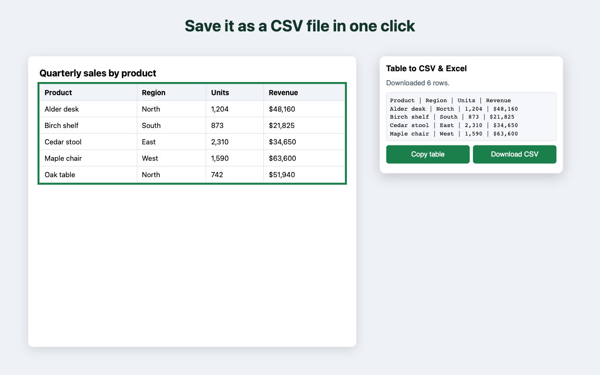
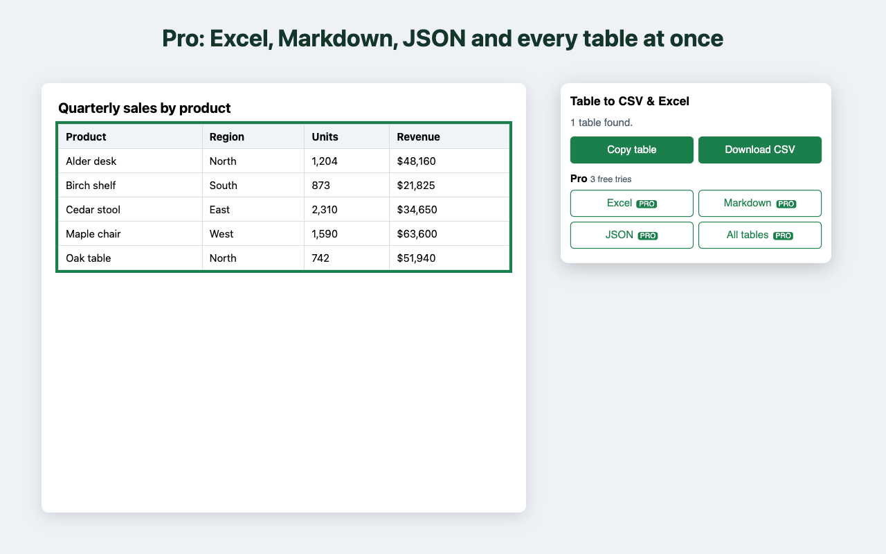

Copy any table on a web page into a spreadsheet, or save it as a CSV file, in one click.



Copy a data grid from any web page and paste it into a spreadsheet, or save it as a file. Made for anyone tired of selecting rows by hand.
How to use
1. Open a page that has a table and click the extension icon.
2. Pick the grid you want from the list. It is outlined on the page.
3. Choose Copy to paste into Sheets or Excel, or Download for a file.
Features
- Finds every grid on the current page
- Copy as tab-separated text that pastes cleanly into spreadsheets
- Save a comma-separated file with correct quoting
- Merged cells are handled
Privacy: the extension works on the page you click it on; nothing about your browsing is sent anywhere.
Support: frankjgilroy@gmail.com
Free to use. Pro: $3.99 per month (pro-monthly) or $29 once (pro-lifetime).